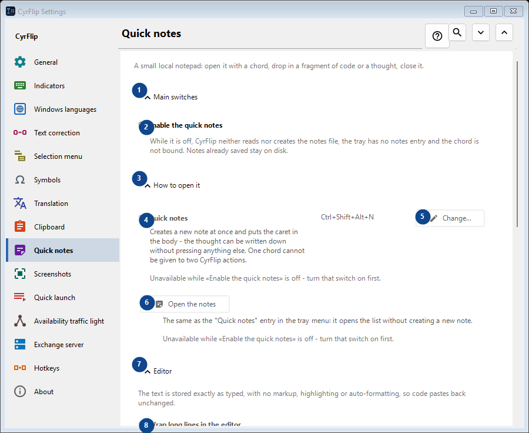
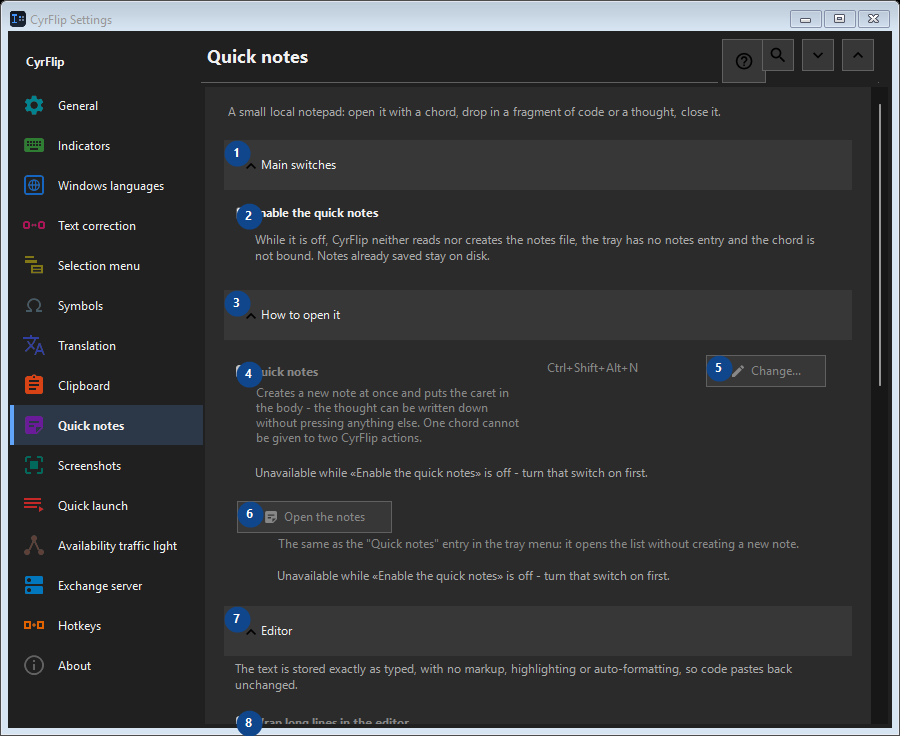

Quick notes
What this is for
A small local notepad: open it with a chord, drop in a fragment of code or a thought, close it.


In this order
Settings apply immediately. There is no required order; use the groups below.
The elements
1. Main switches
Use this command when you need the action named above. Review any confirmation before accepting it.
Your shortcuts2. Enable the quick notes
While it is off, CyrFlip neither reads nor creates the notes file, the tray has no notes entry and the chord is not bound. Notes already saved stay on disk.
Your shortcuts3. How to open it
Use this command when you need the action named above. Review any confirmation before accepting it.
Your shortcuts4. Quick notes
Unavailable while «Enable the quick notes» is off - turn that switch on first. This control is currently unavailable. Enable its feature or select an entry first.
Your shortcuts5. Change - Quick notes
Unavailable while «Enable the quick notes» is off - turn that switch on first. This control is currently unavailable. Enable its feature or select an entry first.
Your shortcuts6. Open the notes
Unavailable while «Enable the quick notes» is off - turn that switch on first. This control is currently unavailable. Enable its feature or select an entry first.
Your shortcuts7. Editor
Use this command when you need the action named above. Review any confirmation before accepting it.
Your shortcuts8. Wrap long lines in the editor
Unavailable while «Enable the quick notes» is off - turn that switch on first. This control is currently unavailable. Enable its feature or select an entry first.
Your shortcuts9. Export and storage
Use this command when you need the action named above. Review any confirmation before accepting it.
Your shortcuts10. Add the dates when exporting
Unavailable while «Enable the quick notes» is off - turn that switch on first. This control is currently unavailable. Enable its feature or select an entry first.
Your shortcuts11. Export every note to Markdown...
Unavailable while «Enable the quick notes» is off - turn that switch on first. This control is currently unavailable. Enable its feature or select an entry first.
Your shortcuts12. Delete every quick note
Unavailable while «Enable the quick notes» is off - turn that switch on first. This control is currently unavailable. Enable its feature or select an entry first.
Your shortcuts13. Moving to another computer
Use this command when you need the action named above. Review any confirmation before accepting it.
Your shortcuts14. Export...
One open text file with your notes and the clipboard history you choose: read it in any editor or on a phone, and import it into CyrFlip on another computer. The file is not encrypted. The import shows what will be added and deletes nothing.
Your shortcuts15. Import...
Use this command when you need the action named above. Review any confirmation before accepting it.
Your shortcuts